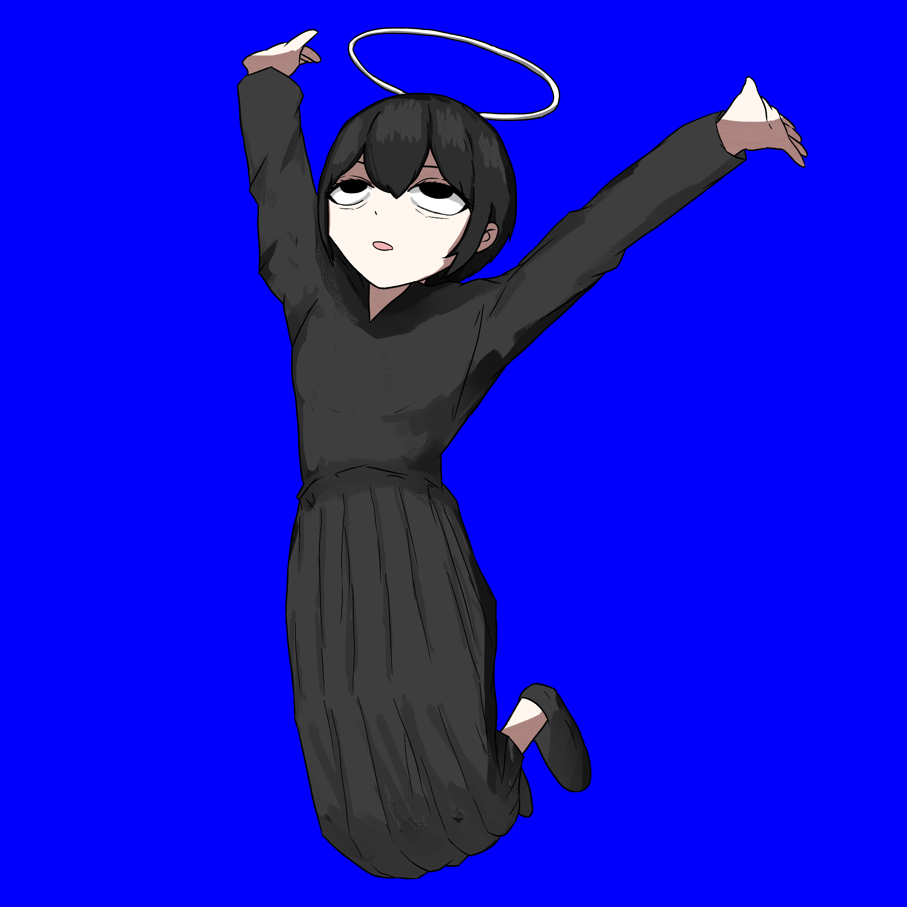

こんにちは、ザクザク食感です。
相変わらず何もせずに生きている
先月くらいまでめちゃくちゃ絵を描けていたしcubaseを触ったりできていたけど、ここ一か月は特に何もできない 勢いでコミティア申し込んじゃったのに作業が全く進んでない！！！
以前みたいに死にたさが押し寄せて動けないわけじゃなくて、ただ何もする気が起きなくて動けない
僕は人と自分を勝手に比較して凹んでしまうのをしょっちゅうやってしまう性格なので、やりたいことを見つけてちゃんと生きている友達やフォロワーを見てめちゃくちゃ焦っている
3年前くらいまでは、みんな早く死にたい！って言っていた気がするけど、気が付いたらみんな生きがいや現実での居場所を見つけてツイッターからいなくなっていた
ツイッターに残ってくれたフォロワーも最悪の現実に立ち向かっていて、マジでかっこいい
みんなまともになったから僕もなりたくて、ODとかリスカをしないとか、みだりに弱音を吐かない（全然吐いてるけど前よりましだと思う）とか、余計なことをしないようにはなれたと思う
それと同時に負の衝動すらなくなって、だんだん透明に無気力になっていくのを感じる
今考えていることを頑張って文字に起こしているけど、最近は思考が脳を支配してぐるぐるすることすらなくなってきて、何も考えずにずーっと寝ている
たぶん薬のおかげだし楽なんだけど、楽になった分自分を構成していた要素が抜けていったような気がして、それが気持ち悪い
0になるよりはマイナスでも絶対値が大きい方がコンテンツとしては見どころがあると思うので、自分からコンテンツ力がなくなっていくのが怖い
薬で嫌なことを考えなくて済むのは実感しているけど、その結果自分が無になっていくのって本当に正しいんですか……？まどマギのきゅうべえに「鬱を治してください！」ってお願いした結果みたいじゃないですか！？
とか言ってても仕方なくて、自分が頑張ることでしか自分は変わらないので久々に絵を描いた 難しかった！！！
飛び降りて死にたかったけど背景が描けないので失敗です

きららジャンプのつもりだったのにチャー研のエ゛エーイになっちゃった；；
それでは、さようなら。